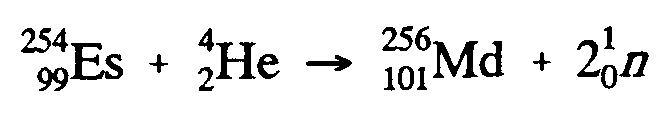

|
©hoose LANGUAGE bArd fr©Ide
7 SUPERSCRIPTS AND SUBSCRIPTS
The transcription of superscripts and subscripts must conform to the rules of the Nemeth Code, Rule XIII. Any material carrying a superscript or subscript must be punctuated in the mathemat- ical mode.
7.1 Simultaneous and Non-simultaneous Superscripts and Subscripts.
Simultaneous and non-simultaneous subscript and superscript notation must be preserved as it has special significance in chemistry.
Example 7.1-1: (subscript; electron charge as superscript, non-simultaneous)
#5,c2,o4"^2-"(aq)
Example 7.1-2: (in an equation)
Example 7.1-3: (non-simultaneous, with orbitals) (See also Example 4.2.3-5.)
.s;2;;s"^2, .p;2;;p"^4, .s;2;;p"^2
Example 7.1-4: (simultaneous, with orbitals)
.s;2;;s^@##2, .p;2;;p^@##2
7.2 Electron Charge. Different textbooks use different methods to indicate electron charge. No matter what method is used in print, only one method should be used in braille. Whether the +'s and -'s are repeated in one row, appear in a column, or with a numeral, they all have the same meaning. In braille, use the appropriate numeral followed by the charge shown. If only one unit charge is present, do not braille #1, only the charge symbol (see Examples 7.2-1 and 7.2-2).
Example 7.2-1: (number for plus given in print; superscript minus unnumbered)
,fe^2+"+2e^- $o ,fe
Example 7.2-2: (unnumbered, single superscripts)
,br2+2e^- $o #2,Br^-
Example 7.2-3: (3 plus signs in a row)
#2,al $o #2,al^3+"+6$c_$-]
Example 7.2-4: (2 negative signs in a row)
,h,p,o4"^2-
Example 7.2-5: (First example shows 3 negative signs in a row; second shows 3 negative signs in a column; third shows the number of negative signs with a numeral. All are transcribed alike.)
,p,o4"^3-
Example 7.2-6: (2 negative signs in a column superscript to the parenthesis)
(,s,o4)^2-
Example 7.2-7: (2 negative signs in a column, non-simultaneous super- scripts)
,s,o4"^2-
Example 7.2-8: (variable used with negative sign)
(,si,o3);n"^2n-
Example 7.2-9: (electron charges printed as superscripts; oxidation numbers directly over SYMBOLS)
+2 -#1
,mg^2+",br2^-
Example 7.2-10: (electron charge in a spatial arrangement)
Example 7.2-11: (superscript applies to an element)
Example 7.2-12: (superscript applies to entire structure; transcriber's group- ing symbols added)
Example 7.2-13: (superscript applies to entire structure; transcriber's grouping symbols added; what appears as a bold dot is used as the normal electron dot in this text)
Example 7.2-14: (superscript applies to entire structure)
7.3 Atomic Numbers and Mass Numbers. Atomic numbers and mass numbers are printed as left superscripts and subscripts. Follow the rules of the Nemeth Code.
Example 7.3-1:

;99^254",es+;2^4",He
$o ;101^256",md+2;0^1"n
|
 Tჸe $_hodor bARionlegitim@.
Tჸe $_hodor bARionlegitim@.